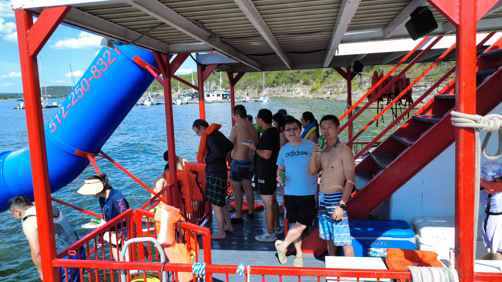
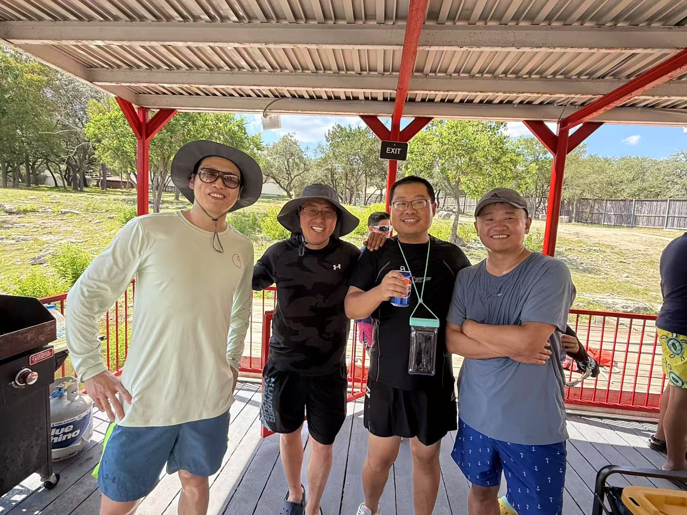
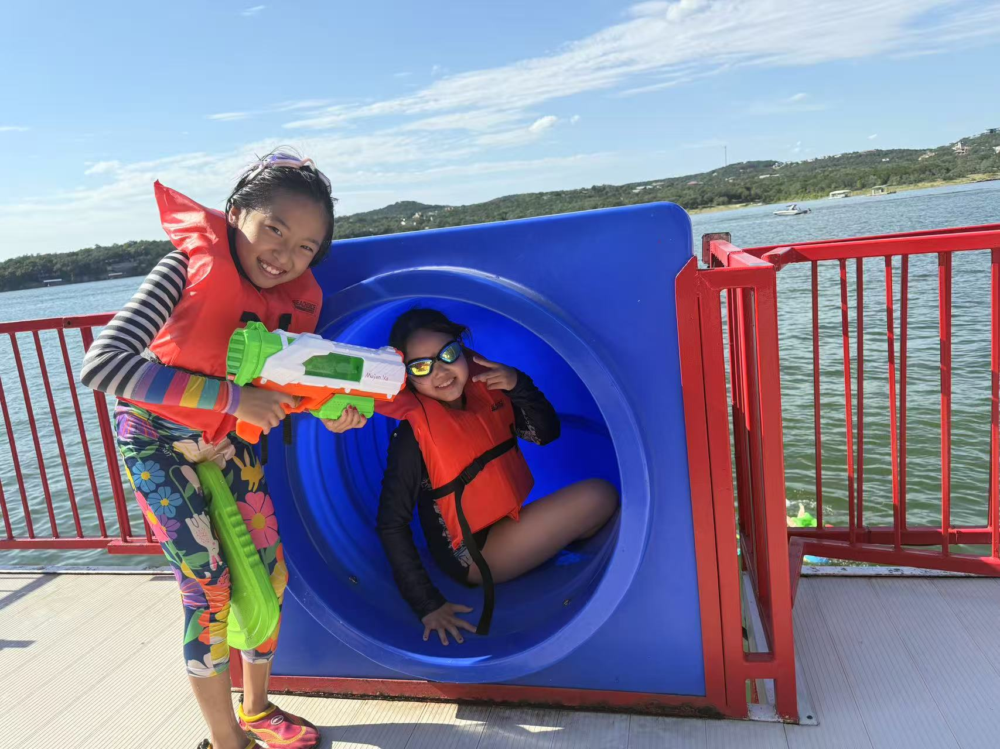
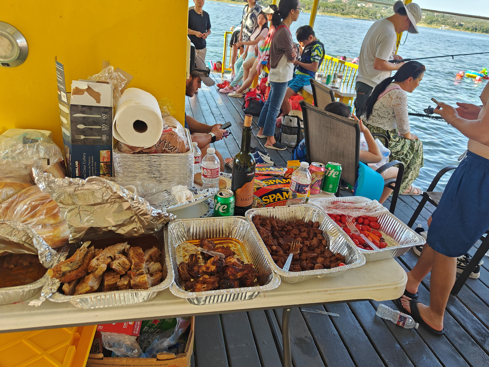
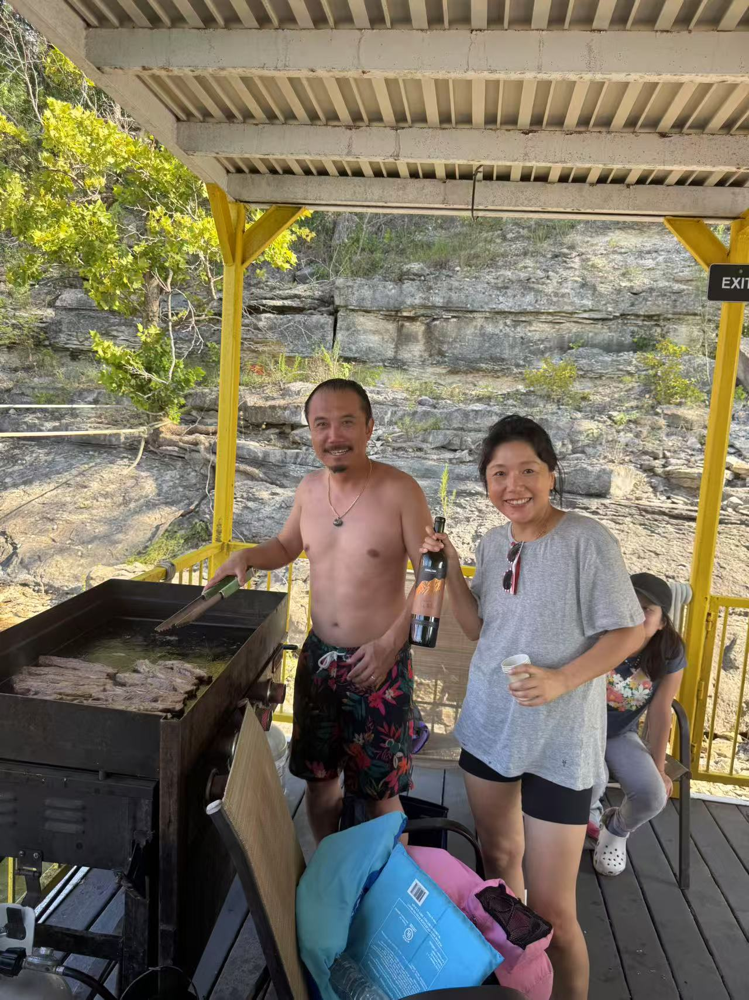

Boat Party 2025
Two party barges hosted 96 people for an unforgettable day on Lake Travis with swimming, fishing, and great food.
TAAA hosted a lively summer boat party on Lake Travis.
There were two party barge boats in total, a red and a yellow one, each with 48 people.
The boats had two floors with a waterslide leading to the water below on the second floor.
Other amenities included a grill, which we used to grill cumin lamb and other seasoned meats, and a cooler, which stored all our drinks.
Once we reached our final destination, the captain anchored the boats to nearby trees.
The scenery around us was beautiful: clear, blue skies with soft white clouds and blue-green water. There were gradual hills covered in trees, shrubs, and rocky outcrops on one side, and a large stretch of water on the other.
Everyone had a great time catching up, swimming in the water to cool off, relaxing with a drink in hand, and listening to the music from the speakers.
Some went fishing and ended up catching lots of fish, including catfish and bass.
A guy even managed to catch a catfish with his bare hands!
For lunch/dinner, there was a variety of delicious food, including pizza topped with meat, chicken, beef, pepperoni, pineapple, and bacon; sausages; and home-cooked roast beef.
Even though it was really hot that day, the fun and memories made it all worthwhile.








